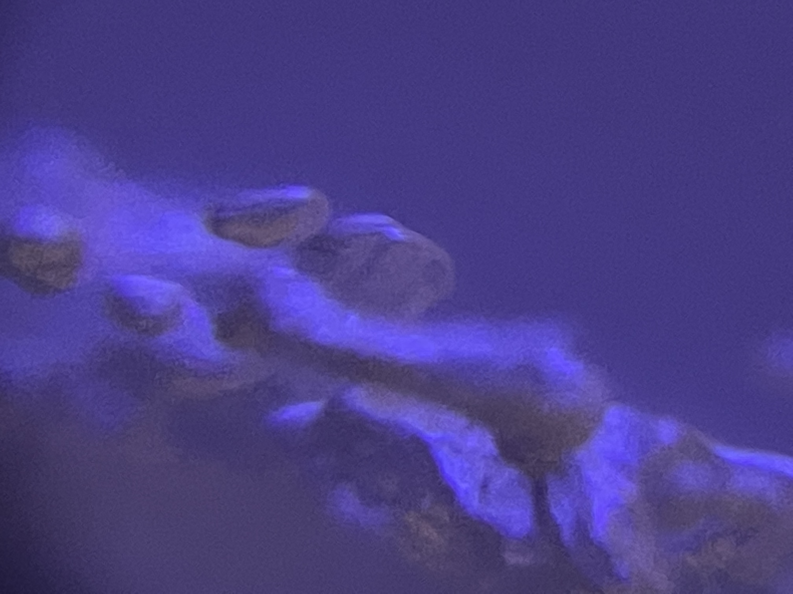
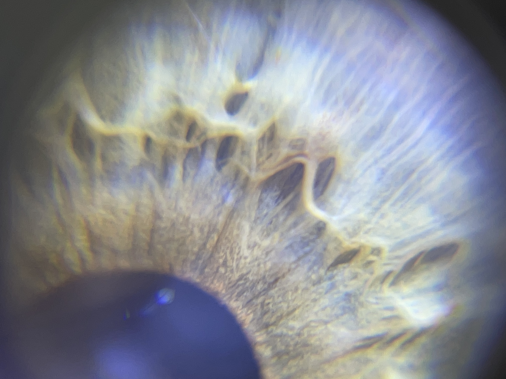
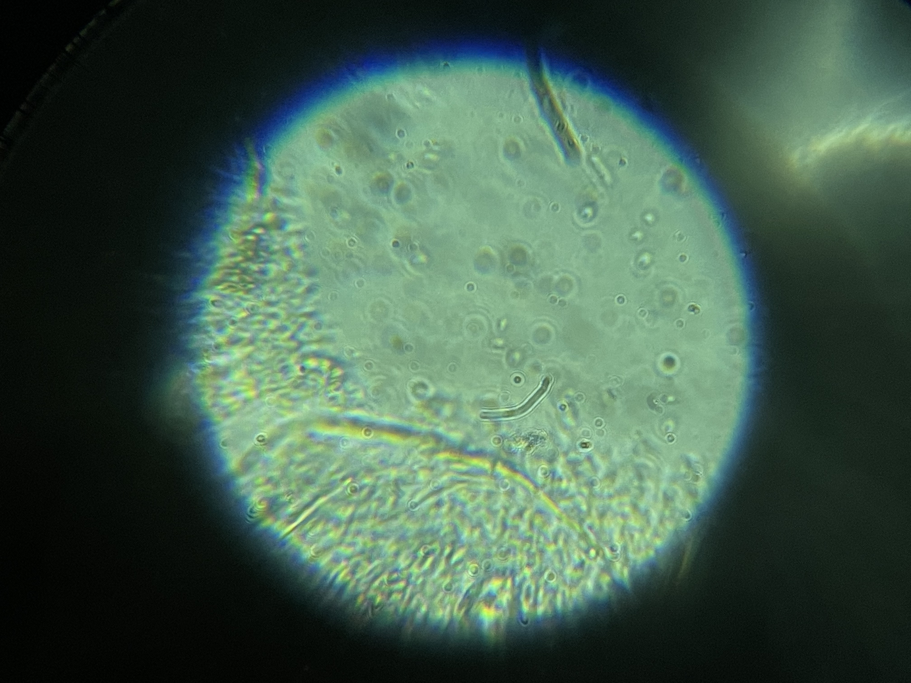
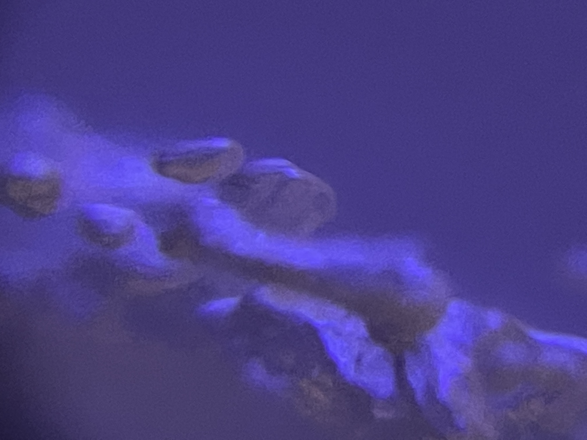
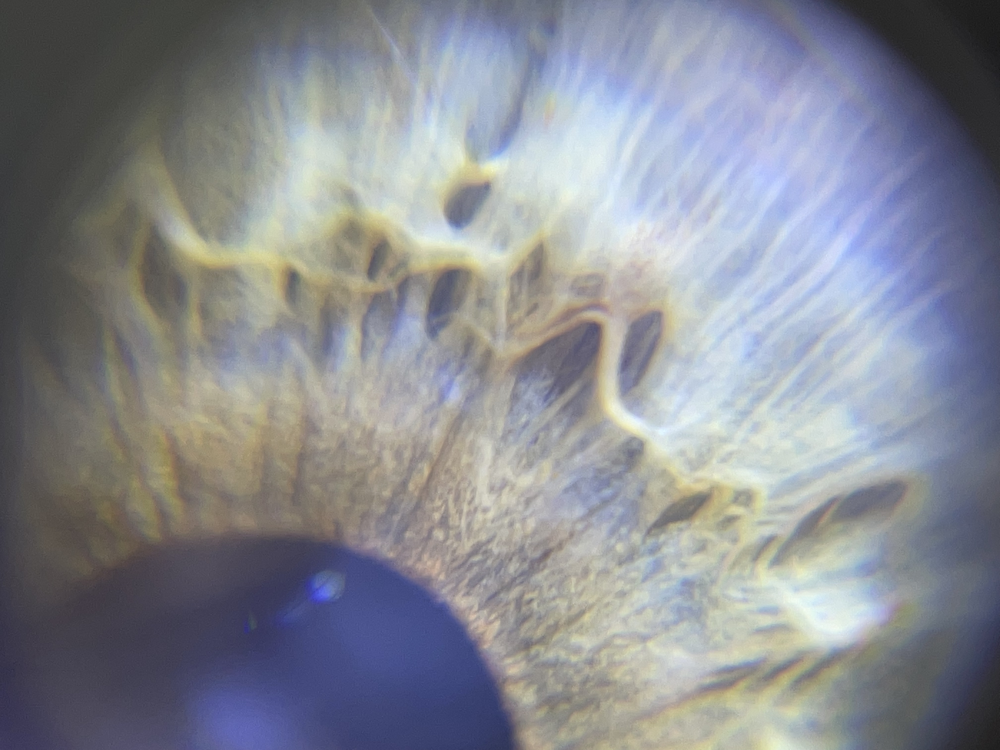
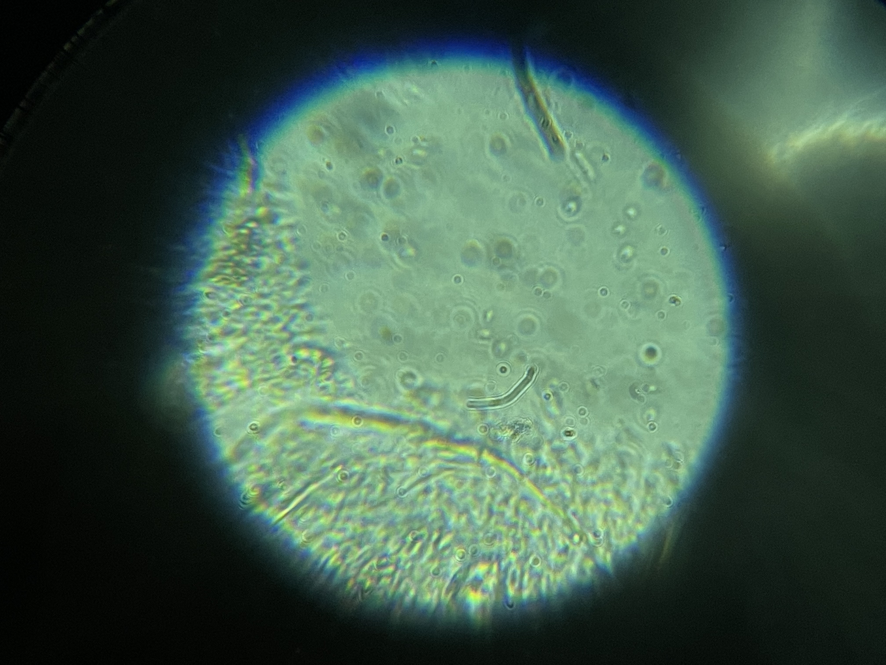

Learning about the building blocks of life
As a primer for both biology and synthetic biology, we learned about the basic building blocks of everything that lives. From proteins, DNA, cell structures, metabolism to the inner working of a single-cell organism, we dove into the most important abstraction layers of biology. Sometime curious, sometimes overwhelming, it was always incredibly eye-opening and revealing. Through that, we gained a perspective that later in the course enabled us to explore synthetic biology, CRISP-CAS9 and PCR tests.
But first we simply played around with a microscope lens for our smartphones, discovering the world around us. Below you can find some of the images that came to be of this.
 
Microscopic images
Sampling Bacteria
Methodology
Probe 1 – For probe one, to be put in an all purpose medium, a clinical glove was sterilized and and dried for est. 3 minutes. After, the glove was used to wipe my forehead with the index finger for aprox. 1 second. Then, the contaminated finger was wiped across the medium, which was then closed.
Probe 2 – For probe 2, to be put in a Lacto Basilius medium, a sterilized wooden spatula was used to take a sample from Paula's yoghurt. After, this sample was moved across the medium to transfer the cultures.
Hypothesis
Probe 1 – As for probe 1, this serves as a control group for Borka's test of wiping both a public bike's handlebar and my bike's handlebar. If the hypothesis is correct, she should cultivate a bacteria in one of her samples which is closely related to the sample gathered on my skin.
Probe 2 – As for probe 2, the hypothesis is that we can verify lacto bacilius bacteria in a sample of yoghurt.For probe one, to be put in an all purpose medium, a clinical glove was sterilized and and dried for est. 3 minutes. After, the glove was used to wipe my forehead with the index finger for aprox. 1 second. Then, the contaminated finger was wiped across the medium, which was then closed.
Mixing bacteria mediums in group work.
The classroom during the PCR test.
Gene-Editing Organisms
Additionally, we were assigned to propose a genetic modification for an organism based on the IGEM parts library. Subsequently, I'm proposing to reduce the smell of bananas because I think they have more winning qualities to them, such as their taste. The part employed would be BBa_J45220 , utilizing this sequence.
Dr. Nuria Conde preparing samples for the PCR test.

Analyzing the PCR test results.
Useful links / For further reading
Conway's Game of Life
The Lab Rat (DIY Scientific Ressources)
Ginko Bioworks (BioTech Company)
The Cyborg Manifesto (Essay)
Spirulina Algae in Clinical Practice (Scientific Paper)
https://sci-hub.ee (Sci-Hub Proxy)
Organa (Catalan Spirulina Shop)
Human Genome Project
Encode Project
Scientists have taught spinach to send emails (News Article)
OpenWorm
The Social Life of Forests (News Article)
Entangled Life by Merlin Sheldrake (Book)
An Introduction to Spirulina Farming (Scientific Article)
Spirulina Farming in India (Article)
The Interspecies Internet
IGEM Parts Catalogue